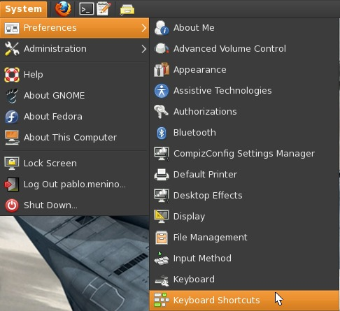
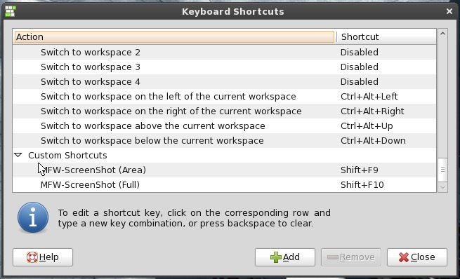
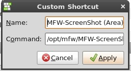

MFW ScreenShot Tool - A tool for take screenshots
Version 1.2.1
https://github.com/pablomenino/MFW-ScreenShot
http://pablomenino.github.io/MFW-ScreenShot/
Menu:
MFW-ScreenShot.pl [option] --print_help - Display a brief list of command line options --print_version - Print version info --full_screenshot - Full screen screenshot --area_screenshot - Screen area screenshot
To setup a keyboard shortcut, open Keyboard Shortcuts from system menu Go To: Gnome Menu -> System -> Preferences -> Keyboard Shortcuts Or execute on a shell terminal:[user@linux ~]$ gnome-keybinding-properties  Create something like this on Custom Commands:  Name and Command:  Screen Area Name: MFW-ScreenShot (Area) Command: /opt/mfw/MFW-ScreenShot/MFW-ScreenShot.pl --area_screenshot Full ScreenShot Name: MFW-ScreenShot (Full) Command: /opt/mfw/MFW-ScreenShot/MFW-ScreenShot.pl --full_screenshot And select the key on the shotcut section.